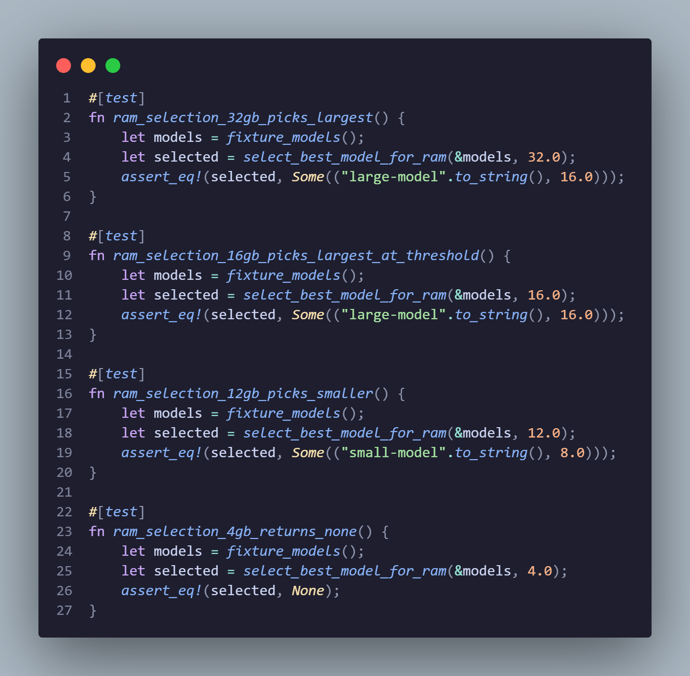
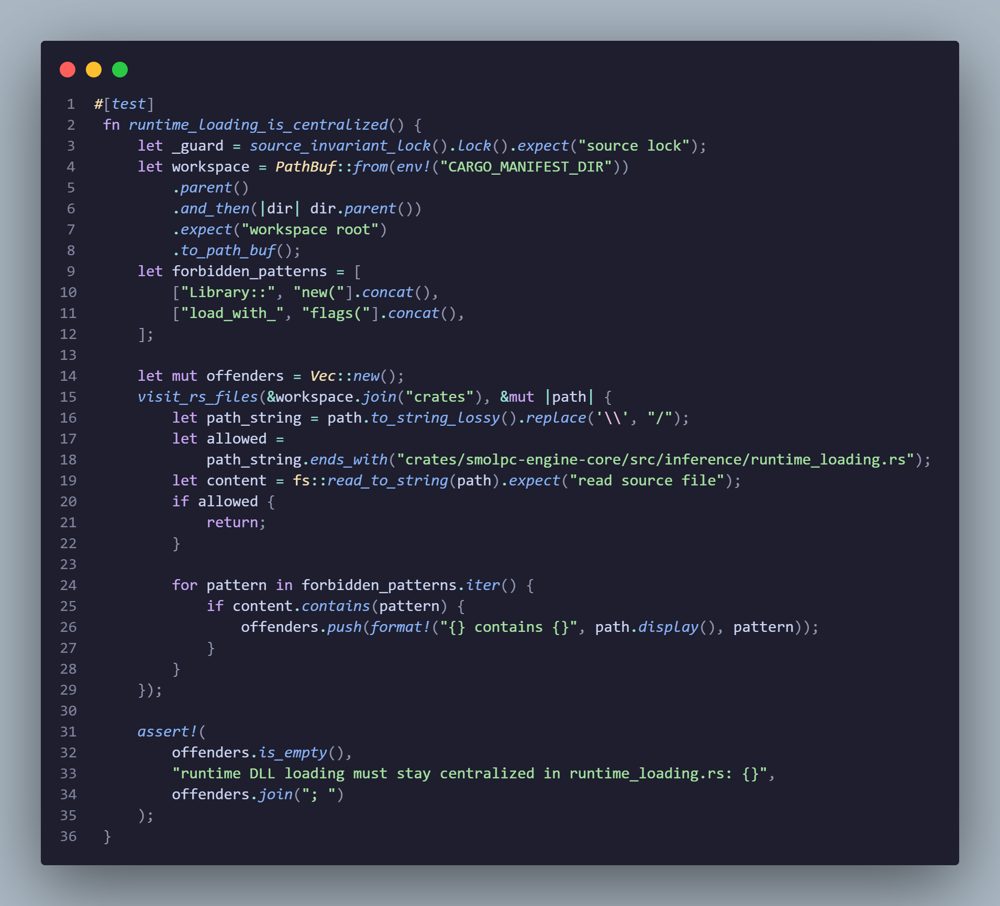

Testing
Testing Strategy
Why We Tested This Way
SmolPC 2.0 spans a shared Rust inference engine, a Tauri desktop shell, a Svelte frontend, and host-application bridges for GIMP, Blender, Writer, and Slides. A regression in any layer — a renamed JSON field, a broken backend selection path, a misconfigured DLL search order — can silently break the entire platform even when the UI still appears to load. Automated testing was therefore not optional: it was the primary mechanism for catching these cross-boundary failures before they reached users.
Two-Tier Strategy
Tier 1: Unit Tests — Logic Without Hardware
Unit tests validate logic that does not require a real GPU, NPU, or host application.
ChatML rendering, config parsing, backend selection state machines, thinking filters,
error classification, type serialisation contracts, path validation, and connector
heuristics are all testable without hardware. These tests run in CI on every push to
main and on all pull requests, providing immediate feedback on regressions.
Tier 2: Live Tests — Hardware Paths
Live tests validate the hardware-dependent paths: generation quality on a specific backend,
streaming behaviour, model loading on real NPU or GPU hardware, and host-application
bridge behaviour with real GIMP, Blender, or LibreOffice processes. These run manually on
physical machines because there is no way to simulate a real NPU or discrete GPU in CI.
After changing generation config, backend selection, or model loading, the protocol is:
start the engine with SMOLPC_FORCE_EP=<backend>, send a streaming
chat completion via curl, and verify output quality — not just
"no crash."
Scale: ~302 Test Functions
The test suite covers the full stack from low-level tensor extraction to high-level provisioning workflows. The following table summarises the distribution across all components.
| Component | Source Location | Test Count |
|---|---|---|
| Engine host | engine/crates/smolpc-engine-host/src/tests.rs | 49 |
| Engine core | 7 inline #[cfg(test)] modules | 40 |
| Engine client | engine/crates/smolpc-engine-client/src/lib.rs | 18 |
| Desktop app | app/src-tauri/src/ (19 modules) | 76 |
| Blender connector | connectors/blender/ (7 modules) | 32 |
| GIMP connector | connectors/gimp/ (6 modules) | 28 |
| LibreOffice connector | connectors/libreoffice/ (5 modules) | 26 |
| Connector-common | crates/smolpc-connector-common/ (5 modules) | 16 |
| Security | app/src-tauri/src/security/tests.rs | 7 |
| Type contracts | crates/smolpc-assistant-types/tests/contracts.rs | 5 |
| Benchmark stats | engine/crates/smolpc-benchmark/src/stats.rs | 5 |
| Total | ~302 |
Tools and Commands
Automated Toolchain
The project uses five complementary automated verification tools, each targeting a different failure class:
| Tool | Command | What It Catches |
|---|---|---|
cargo test | cargo test --workspace | Logic regressions in all Rust crates (engine, desktop app, connectors) |
npm run check | TypeScript + Svelte type checking | Type errors in the frontend shell before they reach the browser |
npm run boundary:check | Runs check-boundaries.ps1 | Architectural violations: legacy module resurrection, broken process isolation |
cargo audit | Dependency vulnerability scan | Known CVEs in Rust dependency tree |
| Manual testing | Tauri dev + packaged builds | End-to-end workflows with real host applications, hardware-specific paths |
# Engine and connector tests
cargo test -p smolpc-engine-core -p smolpc-engine-client -p smolpc-engine-host
cargo test -p smolpc-connector-common -p smolpc-connector-blender
cargo test -p smolpc-connector-gimp -p smolpc-connector-libreoffice
# Desktop app tests
cargo test -p smolpc-desktop
# Frontend checks
npm run check
npm run boundary:check
# Security audit
cargo auditTest Isolation Patterns
Rust's cargo test runs tests in parallel by default, and environment
variables are process-global. Without isolation, env-mutating tests would produce
non-deterministic failures. The project uses four isolation patterns to prevent this:
RAII Environment Guards
EnvVarGuard (engine host) and RuntimeEnvGuard (engine client)
are RAII structs that save the current value of an environment variable on construction
and restore it on Drop — even if the test panics. This prevents a
failing test from leaking SMOLPC_FORCE_EP or
SMOLPC_DML_DEVICE_ID into subsequent tests.
Global Mutex Serialisation
A global OnceLock<Mutex<()>> guard serialises all tests that
mutate environment variables. Both the engine host and engine client test modules use
env_lock() to acquire this mutex before modifying any SMOLPC_*
variables, ensuring deterministic results despite parallel execution.
Filesystem Isolation via tempdir()
The tempfile crate's tempdir() creates a unique temporary
directory per test, used extensively in runtime loading, backend store persistence,
connector setup, provisioning, and ZIP extraction tests. The directory is automatically
deleted when the TempDir guard drops.
Mock Implementations via #[cfg(test)]
Connector crates use conditional compilation to substitute mock implementations for bridge, runtime, and transport layers during testing. This allows provider and executor tests to run without real Blender, GIMP, or LibreOffice processes, keeping them deterministic and fast enough for CI.
CI Pipeline: 7 Jobs on Every Push and PR
Every push to main and every pull request triggers seven CI jobs on
windows-latest runners. This provides fast feedback on regressions across the
frontend, the engine, the desktop app, architectural boundaries, code style, and
dependency security. The pipeline is defined in
.github/workflows/ci.yml.
| Job | What It Does | Why It Matters |
|---|---|---|
| 1. Frontend Quality | TypeScript + Svelte type checking (npm run check), NPM vulnerability audit (high+ severity) |
Catches type errors and known frontend vulnerabilities before merge |
| 2. Boundary Enforcement | Runs check-boundaries.ps1 with 8 architectural rules |
Prevents resurrection of legacy modules, broken process isolation, and Ollama remnants |
| 3. Engine Tests (MSRV) | Tests 7 crates on Rust 1.88.0 (minimum supported version) | Ensures the engine builds and passes on the oldest supported compiler |
| 4. Engine Tests (stable) | Same 7 crates on latest stable Rust | Catches regressions introduced by newer compiler versions |
| 5. Tauri Build Check | cargo check -p smolpc-desktop |
Verifies the desktop app compiles (does not produce a binary — that requires runtime DLLs) |
| 6. Incremental Style Gates | Prettier, ESLint, and rustfmt on changed files only |
Enforces formatting and lint rules without slowing CI on the entire codebase |
| 7. Rust Security Audit | cargo audit for known CVEs in Rust dependencies |
Flags vulnerable crates before they ship in a packaged build |
Boundary Enforcement: 8 Rules
The boundary enforcement script enforces eight rules that prevent architectural regression.
Five are file-absence rules (certain legacy paths must not exist); three are content rules
(certain patterns must not appear in specific files). These rules exist because SmolPC
migrated from an Ollama-backed architecture to a self-contained engine, and the
engine-host boundary is the most safety-critical: if the desktop app imports
smolpc-engine-host directly instead of going through
smolpc-engine-client over HTTP, it defeats process isolation and means a
C FFI crash in the engine takes down the entire UI.
| Rule Type | Target | What It Prevents |
|---|---|---|
| File absent | app/src-tauri/src/inference |
Legacy app-owned inference module — engine owns all inference |
| File absent | app/src-tauri/src/models |
Legacy app-owned model module — engine owns model management |
| File absent | app/src-tauri/src/commands/ollama.rs |
Legacy Ollama integration — fully removed |
| File absent | app/src/lib/stores/ollama.svelte.ts |
Legacy Ollama frontend store — fully removed |
| File absent | app/src/lib/types/ollama.ts |
Legacy Ollama frontend types — fully removed |
| Content rule | commands/mod.rs must not contain \bollama\b |
No Ollama references in command routing |
| Content rule | Cargo.toml must not contain smolpc-engine-host |
Desktop app must depend on engine via engine-client only |
| Content rule | src/**/*.rs must not contain use smolpc_engine_host |
No direct imports of engine-host in the app — defeats process isolation |
Unit Testing
Unit tests lock down the most failure-prone logic across every component. SmolPC is particularly vulnerable to subtle regressions at internal boundaries: a renamed JSON field breaks the Svelte frontend silently, a changed default in backend selection sends every user to the wrong inference path, and a broken DLL search order prevents startup on machines without a GPU. The unit test suite covers all of these failure modes automatically and runs on every CI push.
Engine Host Tests (49 tests)
The largest single test file, covering the engine's core server-side logic. These tests verify that the engine starts, selects backends, parses requests, classifies errors, and handles audio correctly — all without requiring real hardware.
| Group | Count | What It Tests | Why It Matters |
|---|---|---|---|
| ChatML parsing | 5 | Tag formatting with <|im_start|>/<|im_end|>, preformatted pass-through, /nothink injection and suppression for Qwen3 |
Malformed ChatML produces garbage output from the model. Pre-formatted pass-through prevents double-encoding. The /nothink directive controls Qwen3's reasoning mode on NPU. |
| Thinking filter | 4 | Stripping <think>...</think> tags from streaming tokens, handling tags split across chunk boundaries, passing non-thinking text unchanged |
Qwen3 emits internal reasoning in think tags. If these leak to the UI, users see confusing internal monologue instead of clean answers. |
| Request config | 5 | Zero max_tokens rejection, hard cap enforcement (OPENVINO_MAX_TOKENS_HARD_CAP), Qwen3 upstream defaults (temperature=0.7, top_p=0.8, top_k=20), structured message routing based on loaded runtime |
Uncapped token limits cause runaway generation on constrained devices. Wrong defaults produce incoherent output from quantised models. |
| Authentication | 1 | Constant-time token comparison correctness | The engine runs on localhost with bearer auth. Timing-variable comparison would leak token bytes to a local attacker. |
| Startup degradation | 4 | Engine startup with missing ORT DLLs, missing OpenVINO DLLs, missing NPU plugin — all using tempdir() with mock files |
The engine must start on any machine, including those without a GPU or NPU. These tests verify graceful degradation rather than crash on missing runtime bundles. |
| Backend selection | 6 | DirectML preference when both candidates ready, fallback chain when OpenVINO unavailable, adapter release before rebuild, persisted CPU/OpenVINO choice survival, fallback from stale persistence | Backend selection determines which hardware path every user hits. A wrong default or broken persistence sends users to the slowest path without explanation. |
| Model readiness | 5 | Lane-based readiness reporting (CPU/DirectML/OpenVINO reported separately), probe interaction with DML lane, shared artifact readiness propagation | The UI shows per-lane status to users. If readiness reporting is wrong, users see a "ready" badge for a backend that will fail on first request. |
| Error classification | 5 | Unknown model and missing assets flagged non-retryable, memory pressure flagged retryable with hint injection, false-positive prevention, idempotent hint application | Retrying a non-retryable error wastes time and confuses users. Missing the memory-pressure signal prevents the UI from suggesting a model switch. |
| RAM model selection | 4 | 32GB picks largest model, 16GB picks largest at threshold, 12GB picks smaller model, 4GB returns None |
Selecting a model too large for available RAM causes the engine to crash or the system to swap heavily. Selecting too small wastes capable hardware. |
| Audio and TTS | 7 | F32 alignment for Whisper input, serialisation round-trip, Whisper model directory layout, TTS sidecar discovery (binary vs resource dir), TTS request defaults and overrides | Misaligned audio data causes silent Whisper failures. Wrong sidecar discovery prevents TTS from working in packaged builds. |
| Configuration | 3 | Process idle exit disabled by default, zero timeout disables timer, model idle unload default preserved when unset | Wrong idle defaults cause the engine to exit during active use or prevent it from ever releasing memory. |

engine/crates/smolpc-engine-host/src/tests.rs — verifies the engine picks the right model size for the machine's available memory, including the "no suitable model" case for very low RAM.Engine Core Tests (40 tests across 7 files)
Engine core tests live as inline #[cfg(test)] modules inside the source files
they verify. This keeps tests close to the code they protect and makes it obvious when a
logic change needs a corresponding test update.
| Group (source file) | Count | What It Tests | Why It Matters |
|---|---|---|---|
backend.rs |
12 | Decision key fingerprint sensitivity (GPU driver, OpenVINO bundle, NPU tuning changes), benchmark gate enforcement (speedup ratio + TTFT regression limit), DirectML demotion after 3 consecutive failures, TTFT ratio edge cases, serde wire format stability, lane-based JSON structure, readiness vs artifact availability distinction | Fingerprint changes trigger re-evaluation of backend choice. If fingerprints are too coarse, driver updates are ignored. If demotion is too aggressive, a transient failure permanently disables a backend. |
loader.rs |
6 | Default model directory path contract, env override resolution (non-empty and empty), backend directory name stability (DirectML.as_dir() == "dml"), OpenVINO manifest path structure, models directory suffix stability |
Model paths are baked into the packaged build. If the directory naming contract breaks, the engine cannot find models on any machine. |
directml.rs |
6 | Logits tensor row extraction for rank-1 and rank-3 tensors, error handling for invalid dimensions, partial bundle degradation (missing GenAI or DirectML DLL disables only the DML lane, ORT core stays valid) | Logits extraction is the hot path for token sampling. Wrong bounds produce garbage tokens. Partial degradation ensures that a missing DirectML DLL does not also disable CPU inference. |
openvino.rs |
5 | Metric millisecond rounding, bundle validation rejection, /nothink injection (prepend to existing system message, create if absent, idempotent on repeated application) |
The NPU backend requires /nothink to suppress Qwen3's reasoning mode. Non-idempotent injection would corrupt the prompt on retry. |
runtime_loading.rs |
4 | Fingerprint determinism (changes when bundle root or versions change), path validation (relative paths rejected), centralisation scan — a source-invariant test that fails CI if any file outside runtime_loading.rs calls Library::new() or load_with_flags() |
DLL loading is the most dangerous operation in the engine — a wrong path or a load from an untrusted directory is a security and stability risk. The centralisation scan enforces this at the source level. |
backend_store.rs |
4 | Serialise/deserialise round-trip for backend decisions, fingerprint-keyed storage (multiple records per model when fingerprints differ), failure counter persistence without a decision, corrupt JSON file recovery | Backend decisions persist across restarts. Corrupt persistence must not crash the engine — it must reset cleanly and re-evaluate. |
registry.rs |
3 | Model list ordering, supported model IDs present, unknown model IDs return None |
The model list drives the UI dropdown. Wrong ordering confuses users; accepting unknown IDs could trigger undefined behaviour in the loader. |

runtime_loading.rs — this test walks every .rs file in the engine crate tree and fails if any file other than runtime_loading.rs calls Library::new() or load_with_flags(). This enforces that all native DLL loading goes through one controlled module.Engine Client Tests (18 tests)
The engine client is the typed interface between the desktop app and the engine host. Its tests verify that the contract between these two processes is stable, that environment overrides parse correctly, and that version compatibility gates work as expected.
| Group | Count | What It Tests | Why It Matters |
|---|---|---|---|
| Runtime env overrides | 3 | Default Auto mode when unset, parsing of cpu/DIRECTML/dml tokens, numeric device ID parsing |
Developers and CI use SMOLPC_FORCE_EP to pin a backend. If parsing is wrong, the override silently does nothing. |
| Error and metrics | 2 | Nested error.message extraction from JSON, fallback stream metrics with token count and TTFT tracking |
Clear error messages let the UI show actionable feedback instead of "unknown error." |
| Model response parsing | 3 | Missing data array rejection, unknown model ID rejection, known model acceptance |
A malformed or unexpected model list from the engine could populate the UI with invalid entries. |
| Running host policy | 2 | Restart when protocol is incompatible and engine is idle, rejection of forced override when engine is busy | The client must handle version mismatches gracefully — restarting a busy engine would kill an active generation. |
| API version compatibility | 2 | Major version extraction from semver strings, major version gate (equal or higher required) | Client and host run in separate processes and may be updated independently. The major version gate prevents silent protocol incompatibilities. |
| Token and serialisation | 2 | Private token file creation (48-char alphanumeric, idempotent reload), startup mode serialisation contract | The auth token secures localhost communication. If creation is not idempotent, every restart generates a new token and invalidates existing connections. |
| Engine status parsing | 4 | Canonical readiness field deserialisation, legacy payload compatibility, is_ready() logic, is_failed() and failure message extraction |
Status parsing drives the startup loading screen and readiness indicators. A parsing failure makes the app think the engine is down when it is actually running. |
Desktop App Tests (76 tests across 19 modules)
The Tauri desktop app tests cover the boundary between the frontend and the Rust backend: supervisor handle operations, engine client adaptation, inference commands, lifecycle state machines, path resolution, audio processing, provisioning, and setup flows.
| Module | Count | What It Tests | Why It Matters |
|---|---|---|---|
engine/handle.rs |
10 | Clone behaviour, synchronous and async client acquisition, timeout on non-running state, terminal state detection, command dispatch (ensure-started, shutdown), fire-and-forget operations | The supervisor handle is the single point of contact between Tauri commands and the engine. A broken handle silently drops commands. |
engine_client_adapter.rs |
8 | Startup mode to runtime mode mapping, runtime env override reading, unknown state rejection, DTO mapping from engine status (canonical fields and fallback), input sanitisation, wire format serialisation | The adapter translates between the engine's internal status format and the frontend's expected DTO shape. A mapping error produces wrong status in the UI. |
commands/inference.rs |
8 | Memory detection heuristics, unload-in-progress error detection, memory level classification (warning/critical thresholds), model recommendation logic, heavy mode detection (Blender, GIMP), auto-unload messaging | Memory pressure handling protects low-RAM machines from becoming unstable during inference. Wrong thresholds either crash the system or unnecessarily restrict capable hardware. |
lib.rs |
6 | App local data directory resolution chain (Tauri path, dirs fallback, debug fallback, last resort), directory creation on disk, managed state wiring for setup and providers | The data directory is the root for all persistent state. If resolution fails, the app cannot store settings, tokens, or provisioned resources. |
engine/mod.rs |
6 | Lifecycle state queries (running, terminal), state machine transition rules (valid and invalid transitions), serialisation format | The lifecycle state machine drives startup, crash recovery, and shutdown. An invalid transition would put the engine in an undefined state. |
app_paths.rs |
5 | Tauri resource path normalisation, nested resources root handling, debug and release fallback behaviour, graceful degradation for unusable candidates | Tauri injects resource paths at build time. If normalisation is wrong, the packaged build cannot find bundled assets. |
commands/audio.rs |
5 | Stereo-to-mono channel mixing, sample rate conversion (passthrough at 16kHz, 48kHz and 44.1kHz down to 16kHz for Whisper), recording buffer size bounds | Whisper requires 16kHz mono PCM. Wrong resampling produces garbled transcription; an unbounded buffer could exhaust memory during long recordings. |
| Provisioning (extractor + manifest + source) | 11 | ZIP extraction with prefix normalisation, cancellation during extraction, recursive directory copy, manifest parsing and version validation, SHA256 integrity verification, model detection, source detection modes | Provisioning installs models, runtimes, and host-app plugins. If extraction silently corrupts files or ignores cancellation, the user is left with a broken installation and no clear error. |
setup/provision.rs |
4 | Directory and Python runtime preparation, isolation from user profile roots, conditional Blender addon and GIMP plugin provisioning | Setup must never touch files outside its designated directories. Conditional provisioning avoids wasting time staging resources for host apps that are not installed. |
| Remaining (13 modules) | 13 | Hardware memory heuristics, mode config ordering, setup status collection, model manifest checks, setup cache persistence and corrupt recovery, code provider idle state, registry sharing, DTO casing | Each covers a specific boundary or contract that, if broken, produces a subtle but user-visible failure. |
Connector Tests (102 tests across 3 connectors + 16 shared)
Connector crates bridge the unified shell to external desktop applications. Their tests use
#[cfg(test)] mock implementations for bridge, runtime, and transport layers so
that they run without real Blender, GIMP, or LibreOffice processes. This keeps them
deterministic and fast enough for CI while still exercising the full provider and executor
logic.
Blender Connector (32 tests across 7 modules)
| Module | Count | What It Tests | Why It Matters |
|---|---|---|---|
bridge.rs |
9 | Token exact-match comparison, token round-trip persistence, public health route (no auth), bearer token validation on scene_current, snapshot payload return, scene cache mutation, oversized body rejection, port conflict error, bridge shutdown |
The bridge runs as a local HTTP server. Auth bypass, body limit failures, or port conflicts would break the Blender workflow or expose scene data. |
provider.rs |
9 | Tool definitions after bridge start, port-occupied error, scene snapshot via tool, RAG context retrieval with metadata, retrieval failure degradation, live scene status, reconnect tool restoration, missing host status, bridge start before addon provisioning | The provider orchestrates bridge, RAG, and tool execution. A failure in any step must degrade gracefully rather than crash the assistant. |
setup.rs |
5 | Addon provisioning, marker short-circuit, probe/enable failure messages, not-prepared status when Blender detected | Setup provisioning installs the Blender addon. If the marker check is wrong, provisioning reruns on every launch. |
executor.rs |
3 | Scene query skips RAG, workflow question uses RAG and emits tokens, cancellation returns cancelled result | The executor must respect cancellation — a hung generation would block the user until timeout. |
state.rs / rag.rs / response.rs |
6 | Default cache returns no-scene message, fresh data returns connected scene, top-match retrieval, disabled index returns empty, messages marked non-undoable, RAG context parsing | State and RAG correctness determines whether the Blender assistant gives scene-aware answers or generic ones. |
GIMP Connector (28 tests across 6 modules)
| Module | Count | What It Tests | Why It Matters |
|---|---|---|---|
setup.rs |
7 | GIMP 2 path rejection, major version CLI parsing, leading number handling, ambiguous path validation, GIMP 3 acceptance, not-prepared status, plugin provisioning with marker write | GIMP 2 is not supported. If version detection is wrong, the plugin is installed into an incompatible host, producing cryptic Script-Fu errors. |
planner.rs |
5 | JSON selector parsing, code fence extraction, invalid tool rejection, non-JSON fallback, retry on first non-JSON output | The planner parses structured LLM output. Offline models produce inconsistent formatting more often than cloud models, making robust parsing essential. |
executor.rs |
5 | Info query success, fast-path edit success, planned call-api edit, answer without connection when selector chooses none, user-friendly error when edit requires connection |
The executor must handle both the fast path (heuristic-matched edits) and the planned path (LLM-guided tool calls), with clear errors when the bridge is not connected. |
runtime.rs |
4 | Python resolution priority (prepared > venv > system), strict mode enforcement when dev fallback disabled | GIMP's bridge depends on Python. Wrong resolution order could pick the wrong interpreter or fail on machines without system Python. |
provider.rs |
4 | Disconnected state error, connected state tool definitions, missing GIMP status, GIMP 2 rejection | The provider must report honest status — claiming "connected" when the bridge is down leads to silent tool execution failures. |
heuristics.rs |
3 | Metadata query detection, region blur fast path, rotate fast path | Heuristics route common prompts directly to tools without needing a full LLM planning step, making simple edits faster and more reliable. |
LibreOffice Connector (26 tests across 5 modules)
| Module | Count | What It Tests | Why It Matters |
|---|---|---|---|
executor.rs |
9 | Writer tool execution with streaming, Impress JSON fallback parsing, stringified JSON arguments, trailing brace/whitespace garbage recovery, summary failure fallback, cancellation fallback, timeout fallback | Offline LLMs produce malformed JSON more often than cloud models. The garbage recovery tests verify that common format errors (trailing braces, extra whitespace, stringified args) are handled rather than crashing the executor. |
provider.rs |
7 | Writer and Impress status with filtered tools, unsupported mode error, runtime start failure error, missing resources error, concurrent status refresh survival, retryable runtime failure detection | Writer and Slides share one provider family but expose different tool sets. If filtering is wrong, Writer users see slide-creation tools and vice versa. |
resources.rs |
4 | Nested path fallback, direct path preference, missing asset error context, dev mode resolution | Resource resolution differs between development and packaged builds. Missing asset detection prevents cryptic runtime errors. |
response.rs |
3 | Fallback summary using document count/names, error payload marking, messages marked non-undoable | When the LLM summary fails, the fallback summary must still describe what changed. Marking responses non-undoable prevents users from trying to undo actions that cannot be reversed. |
runtime.rs |
3 | Config from layout sets entrypoint, stdio transport log dir, summary description | The runtime config drives the Python MCP transport. Wrong entrypoint or log directory makes debugging failures impossible. |
Connector-Common (16 tests across 5 modules)
| Module | Count | What It Tests | Why It Matters |
|---|---|---|---|
launch.rs |
5 | Process detection (skip spawn when running, spawn when absent), executable path exact-match, GIMP and LibreOffice launch error messages | Double-launching a host app creates confusion. Missing executable detection must produce a clear message, not a crash. |
python.rs |
4 | Bundled Python not-prepared when payload missing, staged payload can-prepare, prepare copies payload, resolve prepared Python command | The bundled Python runtime is required for GIMP and LibreOffice bridges. If preparation fails, both connectors are unavailable. |
host_apps.rs |
3 | Cached path preference when it still exists, standard path fallback, GIMP 3 executable name acceptance | Host app discovery caches results for performance. If the cache is stale (app uninstalled or moved), fallback must work. |
manifests.rs |
3 | Manifest validation (empty values rejected), missing expected paths reported, camelCase manifest parsing | Manifests drive provisioning. An invalid manifest must be rejected, not silently accepted and used to stage corrupt files. |
text_generation.rs |
1 | TextStreamer trait propagates cancelled result |
Cancellation propagation ensures that a cancelled generation does not continue streaming tokens after the user stops it. |
Type Contract, Security, and Benchmark Tests (17 tests)
| Group | Count | What It Tests | Why It Matters |
|---|---|---|---|
| Type contracts | 5 | JSON wire format for AppMode, camelCase keys in ModeConfig, kind tag in stream events, toolResults key in response, SetupStatus wire keys and enum values |
The Svelte frontend consumes these JSON payloads directly. A renamed field breaks the UI silently — the TypeScript types match but the runtime values do not. |
| Security | 7 | Content validation (valid, empty, at limit, over limit), large content error formatting, file size validation, file size error message | Content and file size limits protect the engine from denial-of-service via oversized payloads. |
| Benchmark stats | 5 | Empty input produces no stats, single value edge case, known values (mean, std_dev), percentile interpolation, two-value case | The benchmark infrastructure computes statistics across runs. Wrong percentile interpolation or edge-case handling would produce misleading performance reports. |
Analysis: What Passing Unit Tests Guarantee
When all ~302 unit tests pass, the following properties are verified automatically: the engine starts on any machine regardless of which DLLs are present, backend selection follows the correct preference and fallback chain, backend decisions persist and recover from corruption, all JSON wire formats match the frontend's expectations, ChatML is rendered correctly for each model family, memory pressure thresholds and model selection heuristics are correct, the engine-host process isolation boundary is not violated by any source file, and all connector providers degrade gracefully when their host application is unavailable. These guarantees are enforced on every push without requiring hardware or manual intervention.
Integration Testing
Integration testing was essential because the platform is only useful when its parts work together: the shared engine must start correctly, the unified app must display the right state, each mode must route to the correct provider, and host-application bridges must behave predictably. Integration tests require real hardware and are not automated in CI because there is no way to simulate a real NPU, discrete GPU, or running GIMP/Blender process in a CI container.
Hardware Coverage
Three physical test machines cover the backend matrix, ensuring that every supported inference path is exercised on real hardware:
| Machine | CPU | GPU | NPU | RAM | Backends Tested |
|---|---|---|---|---|---|
| Core Ultra laptop | Intel Core Ultra | Intel Arc (integrated) | Intel AI Boost | 16 GB | CPU, OpenVINO NPU |
| Intel CPU desktop | Intel i-series | None | None | 8 GB | CPU only (fallback path) |
| RTX workstation | Intel i5 | NVIDIA RTX 2000 | None | 16 GB | CPU, DirectML |
The Core Ultra machine is the primary NPU test target. The RTX workstation validates DirectML with a discrete NVIDIA GPU. The Intel CPU machine validates the pure fallback path — the lowest-capability configuration the platform supports.
Integration Test Protocol
After any change to generation config, backend selection, or model loading, the following protocol is executed manually on each relevant machine:
- Start the engine with a forced backend:
$env:SMOLPC_FORCE_EP = "cpu"(or"directml","openvino_npu") - Send a streaming chat completion via
curltolocalhost:19432/v1/chat/completions - Verify: response streams tokens (not a single dump), output is coherent code (not garbage or repetition), generation stops at a reasonable length, TTFT and tokens/sec are within expected range, no crash or "unknown exception" errors
End-to-End Scenarios
| Test ID | Components Tested | Description | Expected Outcome | Status |
|---|---|---|---|---|
| IT1 | Startup loading + setup state + engine readiness | Launch the unified app, let the startup loading screen complete, refresh setup state, and confirm that engine readiness and mode availability are reflected in the main shell. | The app moves from startup into the workspace only when engine and setup state are coherent. Unavailable modes are clearly flagged. | Covered |
| IT2 | Mode registry + provider dispatch | Switch between Code, GIMP, Blender, and LibreOffice modes and confirm routing to the correct backend provider. | Each mode invokes the correct provider family without leaking behaviour across assistants. | Covered |
| IT3 | GIMP bridge + tool execution | Prepare the local GIMP runtime, refresh available tools, execute an editing command, and test undo behaviour. | The assistant connects to the bridge, executes supported tools, and returns a clear summary. | Covered with live scenarios |
| IT4 | Blender bridge + local RAG | Start the Blender bridge, read scene context, retrieve local documentation, and answer a scene-specific request. | The assistant combines bridge state and retrieved context without requiring cloud inference. | Covered with live scenarios |
| IT5 | LibreOffice runtime + planner/tool execution | Run Writer or Slides requests that require structured tool calls and verify graceful handling of unsupported flows. | Valid requests execute through the office runtime. Unsupported routes fail clearly and safely. | Covered |
| IT6 | Voice input + audio commands + engine endpoints | Record a short prompt, transcribe it locally into the composer, send the prompt, and request read-aloud on the response. | Dictated text appears in the chat input. Local playback works or fails cleanly without breaking the text workflow. | Covered in development builds |
| IT7 | Backend forced path on each machine | Force CPU, DirectML, and OpenVINO NPU backends on the appropriate machine and run the streaming completion protocol. | Each backend produces coherent streaming output with TTFT in expected range. No crashes or "unknown exception" errors. | Covered across 3 machines |
Automated Integration Checks
In addition to the live scenarios above, the repository includes automated checks around engine-status mapping, runtime-mode restoration, setup preparation, memory-pressure classification, connector execution, and audio request contracts. These tests cover the boundaries between the engine, the Tauri commands, and the mode providers where regression risk is highest.
# Commands exercised during integration verification
cargo test -p smolpc-engine-client
cargo test -p smolpc-engine-host
cargo test -p smolpc-desktop
cargo test -p smolpc-connector-gimp
cargo test -p smolpc-connector-blender
cargo test -p smolpc-connector-libreofficePrompt Testing
Prompt testing was necessary because SmolPC runs offline quantised models, and their behaviour varies more across quantisation levels and inference backends than cloud models. A prompt that works reliably with Qwen2.5-1.5B via CPU might produce a different tool-call format when the same model runs on the NPU via OpenVINO, or might generate malformed JSON that the executor must recover from. Prompt testing checks that the assistants remain understandable, reliable, and correctly routed in realistic user-facing scenarios across these conditions.
| Test ID | Mode | Representative Prompt | Expected Behaviour | Status |
|---|---|---|---|---|
| PT-CH1 | Code Mode | "Explain this error and suggest how to fix it." | The assistant provides a clear coding explanation and next steps in a local chat workflow. | Scenario defined and used during development |
| PT-VO1 | Code Mode Voice | Dictate a short coding question, then ask the app to read the answer aloud. | Voice input transcribes into the composer correctly. The response remains understandable when played back through local read-aloud. | Scenario aligned with implemented UI flow |
| PT-GI1 | GIMP | "Blur the top half of the image." | The assistant chooses an appropriate direct tool or fast path and reports the edit clearly. | Scenario aligned with automated heuristics |
| PT-BL1 | Blender | "How do I add a bevel modifier?" | The assistant retrieves relevant Blender context and gives a scene-aware explanation. | Scenario aligned with local RAG tests |
| PT-LO1 | Writer / Slides | "Add a heading called Hello." / "Add a slide titled Intro." | The assistant produces a valid structured tool call and returns a useful summary of what changed. | Scenario aligned with executor tests |
| PT-FB1 | Cross-mode fallback | Ambiguous or malformed tool-call output | The system falls back safely, summarises locally where possible, or asks for clarification instead of failing silently. | Covered |
Compatibility Testing
Compatibility testing focused on the environments and conditions that matter most for local deployment: packaged desktop behaviour on Windows, hardware-specific runtime paths, and graceful fallback when a preferred dependency or host application is missing. Because the project bundles its own inference engine and runtime DLLs, compatibility is as much about setup and dependency handling as it is about raw operating-system support.
Hardware and OS Coverage
Testing was conducted on three physical machines running Windows 11 (see the
Integration Testing section for the full hardware
matrix). Degradation was verified by removing specific DLLs from the resource directory and
confirming that the engine starts with reduced capability rather than crashing. The startup
degradation unit tests (4 tests using tempdir()) automate this verification
for ORT, OpenVINO, and NPU plugin bundles.
| Platform or Condition | Focus | Expected Behaviour | How Verified | Status |
|---|---|---|---|---|
| Windows 11 packaged build | Primary deployment target for bundled local inference | Installer launches correctly, prepares local resources, and exposes supported modes | Tested on 3 physical machines with NSIS installer | Primary validation target |
| CPU-only machine (8 GB, no GPU/NPU) | Fallback inference path | Engine detects no GPU/NPU and selects CPU backend automatically | Tested on Intel CPU desktop; verified via engine status API | Covered |
| DirectML machine (NVIDIA RTX 2000) | GPU-accelerated inference via DirectML | Engine selects DirectML backend, generation performance improves over CPU | Tested on RTX workstation with forced and automatic selection | Covered |
| NPU machine (Intel AI Boost) | NPU-accelerated inference via OpenVINO | Engine selects OpenVINO NPU backend after probe confirms candidate | Tested on Core Ultra laptop | Covered |
| Missing runtime DLLs | Graceful degradation when ORT, DirectML, or OpenVINO bundles are absent | Engine starts with reduced capability; affected lanes disabled, others remain functional | 4 automated unit tests (tempdir-based), plus manual removal testing | Covered |
| Missing host applications | Setup gating and user messaging | Unsupported or incomplete host dependencies produce a clear blocked or setup-required state | Verified via setup status checks; GIMP version detection rejects GIMP 2 | Covered |
| Missing microphone or audio output | Voice feature degradation | Voice controls disable cleanly; text-chat workflow remains unaffected | Tested with audio devices disabled in Windows settings | Covered |
Performance and Stress Testing
Performance matters because SmolPC runs local models on varied hardware. A machine with 16 GB RAM and an NPU has a fundamentally different performance profile than an 8 GB CPU-only laptop, and both must feel usable. The project includes a dedicated benchmark infrastructure for systematic measurement, plus automated tests for the heuristics that drive runtime behaviour (memory pressure, model selection, streaming).
Benchmark Infrastructure: smolpc-benchmark
The smolpc-benchmark crate is a standalone CLI tool that measures inference
performance across backends using fixed prompts, greedy decoding
(temperature=0.0), and process-specific resource monitoring. This produces
reproducible, comparable results across machines and across code changes.
Measurement Methodology
For each backend-model combination, the tool loads the model, verifies the backend, captures an idle baseline (2 seconds of RSS and CPU% with no inference), runs warmup iterations (minimum 3 for NPU to ensure compilation cache is populated), then executes 10 fixed coding prompts across 3 tiers (short, medium, long) for N measured iterations. Statistics are computed per-prompt: mean, median, P90, P95, standard deviation, min, max.
Metrics Collected
| Metric | Source | Unit | Why It Matters |
|---|---|---|---|
| TTFT (Time to First Token) | Engine GenerationMetrics |
Milliseconds | Perceived responsiveness — the most noticeable latency metric for users |
| Tokens per second | Engine GenerationMetrics |
Tokens/sec | Decode throughput; determines how fast the response streams in |
| TPOT (Time Per Output Token) | Derived: (total_time - ttft) / (tokens - 1) |
Milliseconds | Isolates decode speed from prefill latency |
| Peak memory (RSS) | Background ResourceSampler via sysinfo |
MB | Determines whether the engine fits within the machine's available RAM |
| CPU utilisation | Background ResourceSampler (mean and peak) |
Percent | High CPU% during NPU inference indicates fallback to CPU path |
| Truncation and EOS rates | Reliability aggregation | Fraction (0.0–1.0) | High truncation means max_tokens is too low; low EOS rate means the model is not stopping naturally |
Statistical Analysis
The Stats struct computes population statistics with linear interpolation for
percentiles. The benchmark stats module is itself covered by 5 unit tests verifying empty
input, single value, known values, percentile interpolation, and the two-value edge case.
pub struct Stats {
pub mean: f64,
pub median: f64,
pub p90: f64,
pub p95: f64,
pub std_dev: f64,
pub min: f64,
pub max: f64,
}Performance-Related Automated Tests
In addition to the benchmark tool, several automated tests verify the heuristics that drive runtime performance decisions:
| Test ID | Area | What Is Tested | Why It Matters | Status |
|---|---|---|---|---|
| PF1 | Engine startup | Startup degradation tests (4 tests) verify the engine starts in all DLL configurations; readiness time measured during integration testing | Slow or fragile startup undermines classroom usability even if generation quality is good | Automated + measured |
| PF2 | Streaming generation | TTFT, streaming continuity, and response duration measured by benchmark crate; token streaming verified in integration protocol | These metrics affect perceived responsiveness more than a single total latency number | Instrumented |
| PF3 | Backend selection | 6 host tests + 12 core tests for selection state machine, benchmark gate enforcement (speedup ratio + TTFT regression limit), demotion after consecutive failures | Wrong backend choice sends users to the slowest path without explanation | Automated |
| PF4 | Memory pressure | Warning and critical thresholds, model recommendation logic, heavy mode detection, auto-unload messaging (8 inference command tests) | Protects low-RAM devices from instability during generation | Automated |
| PF5 | Voice I/O | Audio resampling tests (5 tests), recording buffer bounds, TTS sidecar discovery | Voice must not degrade the main chat path; unbounded buffers could exhaust memory | Automated |
Benchmark Method
The benchmark runs used the project's dedicated benchmarking tool with a fixed prompt corpus and
deterministic decoding settings. This kept the prompt inputs aligned across all three machines,
but the configurations were not perfectly identical: two machines used 10 runs per
prompt with 2 warmups, while the Core Ultra Vivobook used 3 runs per
prompt with 1 warmup for a quicker backend comparison pass. The results below
should therefore be read as representative measurements that support the hardware-aware runtime
story, rather than as one fully normalised laboratory benchmark matrix.
We focused the main report on time to first token, tokens per second, and time per output token, because these most directly affect perceived responsiveness in a local assistant. Full raw JSON artefacts, including per-prompt breakdowns and skipped combinations, are linked in the Appendix benchmark section.
Test Machines
| Machine | Hardware Summary | Benchmark Coverage | Main Role in Testing |
|---|---|---|---|
| LAPTOP-4Q14H91S | 11th Gen Intel Core i5-1135G7, 7.7 GB RAM, Intel Iris Xe | CPU benchmark for qwen2.5-1.5b-instruct; attempted NPU and 4B paths but they were unavailable on this setup |
Older low-memory fallback baseline |
| codex-cpu-full-20260327 | 12th Gen Intel Core i7-1255U, 31.7 GB RAM, Intel Iris Xe | CPU benchmark for both qwen2.5-1.5b-instruct and qwen3-4b |
Stronger CPU-only comparison point |
| vivobook-pinto | Intel Core Ultra 9 285H, 15.4 GB RAM, NVIDIA RTX 4050 Laptop GPU, Intel Arc 140T GPU | CPU, DirectML, and OpenVINO NPU benchmarks for both qwen2.5-1.5b-instruct and qwen3-4b |
Main backend-comparison machine |
Summary Results
| Machine | Backend | Model | Mean TTFT (ms) | Mean Tok/s | Mean TPOT (ms) | Cold Start TTFT (ms) | Result Note |
|---|---|---|---|---|---|---|---|
| LAPTOP-4Q14H91S | CPU | qwen2.5-1.5b-instruct |
684.4 | 7.88 | 129.0 | 621 | Usable fallback on older hardware; only successful path on this machine |
| codex-cpu-full-20260327 | CPU | qwen2.5-1.5b-instruct |
476.8 | 13.93 | 72.8 | 589 | Noticeably stronger CPU-only baseline than the older i5 laptop |
| codex-cpu-full-20260327 | CPU | qwen3-4b |
1082.7 | 3.97 | 253.7 | 1364 | Larger model remains usable, but much slower on CPU |
| vivobook-pinto | CPU | qwen2.5-1.5b-instruct |
106.6 | 51.61 | 19.4 | 115 | Very strong CPU fallback on newer hardware |
| vivobook-pinto | CPU | qwen3-4b |
245.5 | 15.07 | 66.4 | 1382 | 4B model is practical on a stronger CPU, but not the fastest lane |
| vivobook-pinto | DirectML | qwen2.5-1.5b-instruct |
154.2 | 108.62 | 8.5 | 614 | Best sustained throughput for the smaller model |
| vivobook-pinto | DirectML | qwen3-4b |
262.7 | 52.46 | 17.7 | 490 | Best sustained throughput for the larger model |
| vivobook-pinto | OpenVINO NPU | qwen2.5-1.5b-instruct |
2279.3 | 16.52 | 60.5 | 2298 | Worked successfully, but was much slower than DirectML and CPU in these tests |
| vivobook-pinto | OpenVINO NPU | qwen3-4b |
4091.5 | 7.88 | 127.0 | 4175 | Highest latency path in this benchmark set |
Peak memory is intentionally omitted from the main comparison table because the benchmark tracks engine-process RSS rather than full GPU VRAM use. Throughput and latency are therefore the more reliable headline metrics for the report body.
Key Findings
- CPU fallback remained viable on every machine where the model assets were present, which supports the project's hardware-aware fallback strategy.
- On the strongest laptop, DirectML delivered the best sustained throughput for both tested models, reaching 108.62 tok/s for
qwen2.5-1.5b-instructand 52.46 tok/s forqwen3-4b. - CPU often produced the lowest TTFT on the strongest laptop, but DirectML dominated longer generation throughput, which is more noticeable in sustained chat use.
- OpenVINO NPU support was functional on the Core Ultra laptop, but in this benchmark set it did not outperform the CPU or DirectML paths on latency or sustained decoding speed.
- The older 7.7 GB laptop completed only the smaller CPU benchmark path successfully; the 4B model was not available there and the attempted NPU path did not expose a usable device through OpenVINO.
- All executed benchmark combinations completed without failed runs, so the main differences observed were performance and availability rather than stability.
User Acceptance Testing
User acceptance testing was planned around representative target users rather than a single generic tester. This matched the product itself: Code mode targets coding support, GIMP and Blender target creative workflows, and the LibreOffice modes target classroom and document-based tasks. Feedback was gathered informally and anonymously from representative users and peers across these workflows to check whether the product felt useful, understandable, and realistic to use as an offline assistant platform.
Tester Profiles
| Tester Profile | Background | Assistant Tested |
|---|---|---|
| Tester 1 | Student or beginner programmer | Code Mode |
| Tester 2 | Teacher or document-focused user | Writer / Slides |
| Tester 3 | Image-editing user | GIMP |
| Tester 4 | 3D learner or maker | Blender |
Test Cases
| Test ID | Assistant | Description | Expected Outcome | Status |
|---|---|---|---|---|
| UAT1 | Code Mode | Ask for help understanding and fixing a short code issue in a chat-based workflow, optionally using voice input or read-aloud. | The tester understands the answer, identifies a next step, and remains comfortable with both the offline chat flow and the optional voice controls. | Confirmed with anonymous positive feedback |
| UAT2 | Writer / Slides | Request a simple structured document or slide change through natural language. | The assistant makes or explains the change clearly and feels useful for classroom productivity tasks. | Confirmed with anonymous positive feedback |
| UAT3 | GIMP | Perform a straightforward image-editing action using a plain-English command. | The tester sees an understandable edit result and trusts the assistant's summary of what happened. | Positive for simple edits |
| UAT4 | Blender | Ask for help with a common modelling action that benefits from scene or documentation context. | The tester receives Blender-specific guidance that feels more useful than a generic chatbot response. | Confirmed with anonymous positive feedback |
Tester Feedback
Code Mode Profile
Anonymous feedback on Code mode was positive overall. Testers found the chat flow easy to follow, valued the offline setup with no cloud dependency, and understood the assistant's answers well enough to identify sensible next steps in beginner-friendly coding tasks. Voice input was noted as a useful accessibility feature, though testers generally preferred typing for code-related queries. The local read-aloud feature was appreciated for reviewing longer explanations hands-free.
Writer / Slides Profile
Anonymous feedback suggested that the office workflows made simple document and slide actions clearer and faster to access, especially for users who preferred describing an action in plain language rather than searching through menus. Testers found the structured tool calls reliable for straightforward operations (add heading, add slide), though more complex multi-step changes occasionally required rephrasing.
GIMP Profile
Anonymous feedback on GIMP was positive for straightforward edits and summaries, but it also confirmed that this remains the least consistent specialist mode. Testers noted that the heuristic fast-path routing (e.g., detecting "rotate" or "blur" prompts) worked well for common operations, while more complex multi-step edits sometimes required clearer prompts. The feedback supports continued focus on tightly scoped prompts and clearer setup guidance.
Blender Profile
Anonymous feedback indicated that the Blender workflow felt more useful than a generic chatbot response because the assistant could combine scene-aware guidance with locally retrieved help content. Testers particularly valued that the assistant knew the current scene state (objects, modifiers) rather than giving generic Blender documentation. The local RAG retrieval was noted as making responses noticeably more relevant.
Project Partner Feedback
Anonymous stakeholder and partner-facing feedback was positive overall, particularly around the value of an offline-first assistant, the unified platform direction, and the practicality of a deployment story that does not depend on cloud accounts or a separate local model server. Partners noted that the single-installer approach significantly reduced the barrier to evaluation compared to solutions requiring separate Ollama or LM Studio installations.